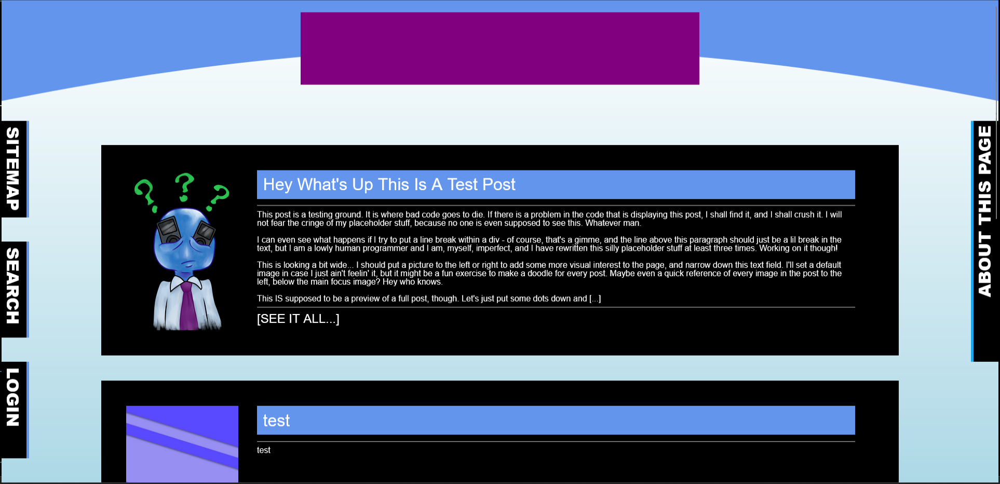
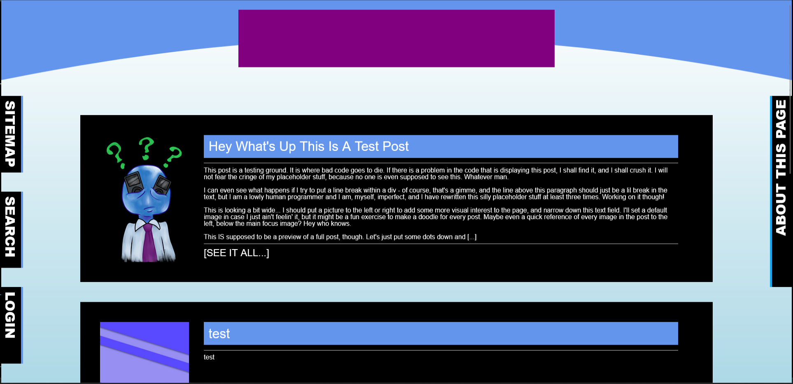

Welcome to the Blog!
MARCH XX 2024 | XX:XX XM
I'm Brandon Watson and at the time of writing, this site is very inprogress! I'll put a screenshot in here later for posterity, because this site will DEFINITELY have undergone some upgrades since this first post. Maybe it's 2030 when you're reading this, my kid is 10, his school is going great, and I've been working for you for 5, 6 years now! Sounds pretty good to me.
Anyway, I'm gonna put the cut here on the preview and put that screenshot down and get to some serious talking.
Welcome back! Here's what this site looked like in 2024.

It's 4:30AM on March 25th 2024, and I'm working hard to follow my passions. I'm putting my all into making these sites, and I can only hope it's gonna pay off soon. I need to put myself out there more,I know, and I think I've been doing that in little ways, but I'm thinking that making a blog like this might be a big way.
I mean, it FEELS big at least; I've never really done public journaling like this before. If I'm going to get a job doing what I love, I need to get used to it. Stop feeling like I'm sabotaging myself by being myself. Been feeling like that too long.
Anyway, that's enough late-night oversharing. Thanks for reading, whoever you might be.
Anyway, I'm gonna put the cut here on the preview and put that screenshot down and get to some serious talking.
Welcome back! Here's what this site looked like in 2024.

It's 4:30AM on March 25th 2024, and I'm working hard to follow my passions. I'm putting my all into making these sites, and I can only hope it's gonna pay off soon. I need to put myself out there more,I know, and I think I've been doing that in little ways, but I'm thinking that making a blog like this might be a big way.
I mean, it FEELS big at least; I've never really done public journaling like this before. If I'm going to get a job doing what I love, I need to get used to it. Stop feeling like I'm sabotaging myself by being myself. Been feeling like that too long.
Anyway, that's enough late-night oversharing. Thanks for reading, whoever you might be.